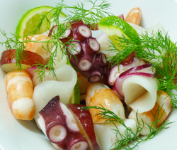

シードルマリネ
- 調理時間：30 分
- （一人当たり）
- カロリー：201kcal
- たんぱく質：19.8g
- 脂質：4.1g
- 塩分：1.3g

＜２人分＞
- ゆでタコ（乱切り）
- 100g
- エビ（茹でて一口大）
- 50g
- イカ（茹でて一口大）
- 50g
- カブ（半月切り）
- 100g
- ブドウ（輪切り）
- 5～6粒
- スダチ（半月切り）
- 1/4個分
- ディル
- お好みで
- ・リンゴ（すりおろす）
- 1/4個分
- ・植物油
- 大さじ1
- ・酢
- 小さじ2
- ・塩
- 小さじ1/3
- ・コショウ
- 少々
リンゴドレッシング A

- タコ、エビ、イカは下準備をする。
- カブ、ブドウも食べやすく切る。
- リンゴドレッシングをつくる。
①ボウルに塩、コショウ、酢、植物油を入れてよくまぜ溶かす。
②すりおろしリンゴを加えてまぜ合わせる。 - ①、②をドレッシングで和え、皿に盛り付け、スダチとディルを飾り、出来上がり。
シードルマリネ
実りの秋。どちらを向いても食べたいものばかりで、お料理する素材には事欠きません。
体はようやく夏の疲れから回復し、食欲が出てくるころ。リンゴや梨、ブドウなどの果物も甘みを増しておいしくなります。
野菜も果物も皮の近くに多くの栄養素が含まれていますから、できるならよく洗って皮ごといただきたい。最近のブドウは皮ごと食べられる品種も多く、皮のアントシアニンやレスベラトロールを摂ることができます。リンゴの皮もすりおろせばお子様からお年寄りまで楽しめます。